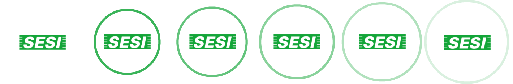
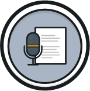
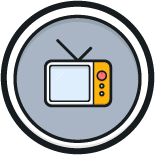
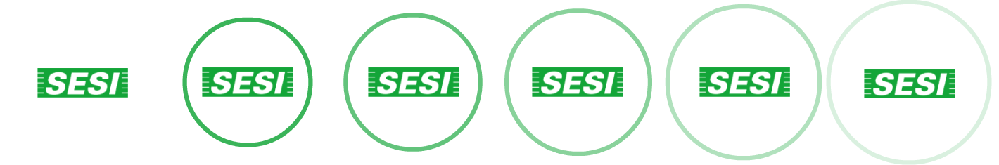
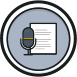
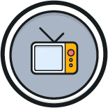


contextualizando...
Foi Gutenberg quem fabricou os primeiros tipos metálicos. Habilmente ele construiu peça por peça. As letras deixaram de ser escritas à mão, agora eram estampadas por cunho de caracteres feitos a partir da fundição do metal (uma liga de chumbo e estanho).
A fabricação dos caracteres metálicos inventada por Johannes Gutenberg é uma cadeia de várias operações de mecânica de precisão, um processo moroso e difícil, que se desenvolvia em três fases distintas.
Na extremidade de um punção de aço, o corpo em relevo da letra era gravado. Usavam-se ferramentas de precisão e se obtinha o patriz. Para a impressão da Bíblia de 42 linhas foram necessários 296 punções, para obter todos os glifos (letras, números, ligaduras, abreviações) usados para compor a obra.
A partir do cunho com os patrizes – uma forte pancada do punção sobre uma barra retangular de cobre – obtinham-se formas negativas, as chamadas matrizes. Depois de cunhadas pelo punção, as matrizes ficavam deformadas nos bordos, sendo necessário retificá-las.
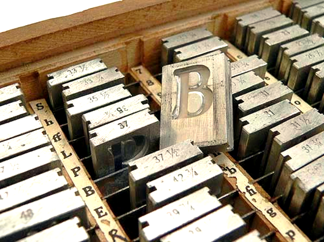As matrizes de cobre, inseridas num aparelho também inventado por Gutenberg, tornam-se moldes. Estes moldes permitem a fundição de milhares de caracteres de imprensa.
A partir do molde, o fundidor de tipos obtinha um caractere em relevo, réplica exata da forma original que tinha gravado na ponta do punção.
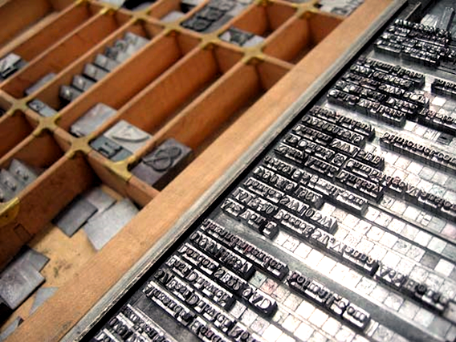 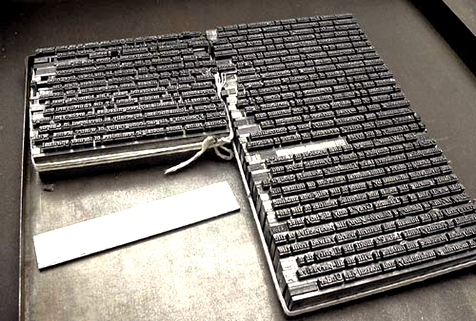
(In: Heitlinger, Paulo. Tipografia:
origens, formas e uso das letras. Copyright © 2006 Paulo Heitlinger, ISBN 10 972-576-396-3, ISBN 13 978-972-576-396-4, Depósito legal 248 958/06. Dinalivro. Lisboa, 2006.)
Você costuma ler? O que você lê? Romances? Poesias? Assim como um leitor faz escolhas, os gêneros literários também são escolhas.
Os gêneros literários são escolhas – e, portanto, formas – de um escritor de literatura colocar e discutir suas ideias para o leitor. Este, de posse do texto do seu autor escolhido, “dialoga” tanto com a ideia quanto com o estilo literário também escolhido. Deste modo, você, aluno, ao ler um poema, um romance, um conto ou uma peça de teatro, por exemplo, está se deparando com um modo de comunicação artística. O que isso, na verdade, quer dizer?
Uma das respostas possíveis é a de que a escolha artística e literária do escritor escolhido pelo leitor (no caso, você, aluno) une esses dois sujeitos, não somente para uma discussão inteligente e consciente, como, também, para a busca de uma satisfação. Claro que não apenas o prazer, pois o objetivo ao se ler um texto literário é, também, buscar nele a realidade de uma determinada época.
Este momento de uma realidade específica pode, entretanto, extrapolar seu contexto, dialogando com qualquer tempo na história da humanidade. Um texto de William Shakespeare ou de Fiódor Dostoiévski ou, ainda, de Machado de Assis, “acontecem” não só nas épocas que eles escreveram, pois “dizem” para o homem contemporâneo muita coisa também.
Em nível dos gêneros literários (Shakespeare escreveu poemas e teatro, Dostoiévski, romances e contos, Machado de Assis, romances, contos, poemas e crônicas), autores como os citados optaram, como se vê, por gêneros abrangentes.
E nós, que não somos estes escritores e, talvez, ainda, não publicamos nada em nível da literatura? Será que em nosso dia a dia não usamos estes gêneros para nos expressar com nossa família, nossos amores e nossos amigos e conhecidos?
A teoria dos gêneros literários surge da observação dos modos do homem se comunicar com os demais homens. Será que não usamos do lirismo (poético, do poema) para falarmos com a pessoa amada? O que dizer de certa dramaticidade (do elemento trágico, da tragédia de uma peça de teatro) para convencermos alguém de que nossa vida, em certo momento, passou por algum problema que pareceu sem solução? E o modo breve, descontraído e coloquial (do cotidiano) que narramos uma curta história e tantas vezes divertimos e aumentamos de modo caricatural uma cena, um momento? Não estaríamos neste instante lidando (normalmente sem associar) com uma crônica ou, então, com uma comédia, caso representarmos com gestos e falas desconcertantes e incisivas? E aquelas histórias longas, longuíssimas, que resolvemos contar e que parecem que não têm mais fim para os nossos amigos mais íntimos? Estas histórias longas não se aproximam do gênero romance?
O importante é estarmos atento para os modos com que nos comunicamos com as outras pessoas, pois a fala, a escrita, os gestos, a escultura, a pintura, a dança, a representação artística no palco através de um texto de teatro, a música, a letra da música, etc. são decisivos para que façamos nossas ideias se concretizar, assim como para construir amizades, para discutir questões pessoais e técnicas com os colegas da indústria, da escola, da família, do amor, entre tantas possibilidades de conhecimento com pessoas que a vida nos dá a oportunidade e que não deveríamos desperdiçar tanto as pessoas que passam por determinados momentos de nossa história pessoal.
Agora, vamos teorizar um pouco sobre estes gêneros literários. Conhecendo-os melhor, podemos pensar um pouco mais nas atitudes que tomamos quando estamos sozinhos ou em contato com alguém, por exemplo, no trabalho ou na família. É importante termos consciência dos modos de comunicação que nos aproximam dos gêneros literários, pois tendo este domínio, podemos repensar muitas vezes as maneiras que nos entendemos com as outras pessoas.
Talvez as pessoas não tenham ainda se perguntado a origem da palavra gênero, embora, no dia a dia, as pessoas conceituam, ainda que abstratamente, o gênero. Dizemos que esta ou aquela pessoa fazem gênero (ou tipo, ou expressão) para convencer alguém ou, apenas, para chamar a atenção (outra forma de convencer!): meigo, tímido, agressivo, distante, etc.
Para entender mais...
“Gênero”, enquanto expressão, deriva do latim generu (m), por genere (m), ou seja, família, raça. Assim, modernamente, “gênero” é tipo, é expressão, é a escolha que um autor, por exemplo, faz para um tipo de escrita para expressar melhor, segundo seus critérios, as suas ideias.
No caso da literatura brasileira, aprende-se, regularmente no ensino da literatura, que cada período ou movimento literário utiliza-se preferencialmente de determinado gênero para se expressar dentro de certo contexto histórico-social. O Barroco (século XVII) e o Arcadismo (século XVIII) preferem o poema, sendo que o Arcadismo desenvolve o poema lírico e épico; o Romantismo (século XIX), devido à sua liberdade de criação e ao seu espírito de aventura, prefere expressar-se através de variados gêneros, no caso o poema, a prosa e o teatro; já o Realismo (século XIX) opta pela prosa – romance e conto; o Parnasianismo e o Simbolismo (ambos no século XIX), pelo poema; o chamado Pré-Modernismo (início do século XX) pela prosa e pela poesia (particularmente a de Augusto dos Anjos), o Modernismo (século XX) em suas fases, pelo poema, pela prosa e pelo teatro; os anos 40, pelo poema e pela prosa, assim como os anos 50 e a contemporaneidade.
| Relembrando a História. | ||
|---|---|---|
| QUINHENTISMO | Século XVI |
|
| BARROCO | Século XVI (Europa); XVII (Brasil-Colônia) |
|
| ARCADISMO | Século XVIII (Europa e Brasil-Colônia) |
|
| ROMANTISMO | Final do século XVIII(Europa) 1ª metade do século XIX (Brasil) |
|
| REALISMO, NATURALISMO, PARNASIANISMO, SIMBOLISMO |
2ª metade do século XIX |
|
| PRÉ-MODERNISMO | Primeiras décadas do século XX (1902 - 1922) |
|
| MODERNISMO | Século XX, 1922 |
|
| ROMANCE DE 30 | Década de 30 do século XX |
|
| ANOS 50 | Século XX |
|
| ANOS 60 | Século XX |
|
Compreendido isso com brevidade, retomemos à Antiguidade e suas noções de gênero literário. Da Antiguidade greco-latina (Grécia e Roma) até a atualidade, percebe-se o vínculo estabelecido da palavra “gênero” com a expressividade do artista. Teoricamente, se recuperarmos Platão, no Livro III da República, encontramos as modalidades atribuídas à “imitação da realidade”.
Assim, a Literatura, como qualquer outra Arte, é produto de certa realidade. Não há, evidentemente, rompimento entre Arte e realidade. Tudo que se cria em nível artístico é, o que chama Aristóteles, mimese. Para não sermos rigorosos com a Arte em geral, é interessante compreender que esta “imitação” pode ser compreendida como reflexo da realidade em que vivemos, seja intelectualmente ou de forma vivencial e direta. Se resolvemos escrever um romance em que o fundo histórico-social deva ser a Revolução Russa de 1917, isso não significa, necessariamente, que tenhamos realmente participado deste fato histórico. Erico Veríssimo, assim como tantos outros escritores brasileiros, recupera, em O Tempo e o Vento, 200 anos da formação histórica do Rio Grande do Sul, desde a formação jesuítica das missões até a dissolução do Estado Novo. Esse recurso da vivência intelectual (registrar fatos estudados e não vividos necessariamente) é comum na prática literária, assim como mesclá-los à vivência direta do artista.
Para as filmagens de O Tempo e o Vento, obra do escritor gaúcho Érico Verissimo, foi criada uma cidade cenográfica, a cidade de Santa Fé. Esse local é Centro Cultural Turístico do município de Bagé.
O filósofo grego Platão chama a atenção quando conceitua o que vem a ser História. Segundo ele, História, grosso modo, é aquilo que realmente acontece. Quando Platão formula esse conceito para a História, define, também, outro conceito: aquilo que não acontece necessariamente - e se acontece, acontece em nossa imaginação - é Literatura. Portanto, o “cara e coroa” de qualquer moeda. De fato, a Arte (a Literatura, por exemplo) é, entre nós, “imitação/reflexo da realidade”. Mas qual realidade é referida? Para discutirmos isto, devemos, então, recuperar a realidade histórico-social de cada período ou movimento literário.
Vivemos várias realidades: a da interação com nossos amigos e familiares – com suas alegrias e tristezas, com a vida do nosso “mundinho íntimo”... vivemos a do nosso trabalho – com nossos compromissos, nossa relação com os companheiros, com os prazeres do dever cumprido, com o reconhecimento de nossos superiores, com as mazelas que nossos fracassos nos trazem... com a realidade do nosso município, do nosso estado e do nosso país – com o sentimento de pertencimento, com a angústia da contradição de se sentir apartado, com o desejo de viver em melhores condições, com a esperança de dias melhores... Nessa vivência multifacetada, vamo-nos SEMPRE construindo cidadãos, e nossa língua tem um papel fundamental nesse processo.
(Eduardo Galeano2)
Tinham as mãos amarradas, ou algemadas, e ainda assim os dedos dançavam, voavam, desenhavam palavras. Os presos estavam encapuzados; mas inclinando-se conseguiam ver alguma coisa, alguma coisinha, por baixo. E embora fosse proibido falar, eles conversavam com as mãos.
Pinio Ungerfeld me ensinou o alfabeto dos dedos, que aprendeu na prisão sem professor:
– Alguns tinham caligrafia ruim – me disse –. Outros tinham letra de artista.
A ditadura uruguaia queria que cada um fosse apenas um, que cada um fosse ninguém: nas cadeias e quartéis, e no país inteiro, a comunicação era um delito.
Alguns presos passaram mais de dez anos enterrados em calabouços solitários do tamanho de um ataúde, sem escutar outras vozes além do ruído das grades ou do passo das botas pelos corredores. Fernandez Huidobro e Mauricio Rosencof, condenados a essa solidão, salvaram-se porque conseguiram conversar, com batidinhas na parede. Assim contavam sonhos e lembranças, amores e desamores; discutiam, se abraçavam, brigavam; compartilhavam certezas e belezas e também dúvidas e culpas e perguntas que não têm resposta.
Quando é verdadeira, quando nasce da necessidade de dizer, a voz humana não encontra quem a detenha. Se lhe negam a boca, ela fala pelas
1Alusão à canção de Caetano Veloso.
2 GALEANO, Eduardo. O Livro dos Abraços. Porto Alegre: L&PM, 1991.
mãos, ou pelos olhos, ou pelos poros, ou por onde for. Porque todos, todos, temos algo a dizer aos outros, alguma coisa, alguma palavra que merece ser celebrada ou perdoada pelos demais.
Uma pausa para pensar
Considerando a leitura do texto, reflita sobre as seguintes questões:
O que significa celebrar? Por que a voz humana é celebrada?
A importância da voz humana, no texto, ultrapassa o plano oral. Explique por quê.
O que significaria “caligrafia ruim” e “letra de artista” no texto?
Por que conversar salva Fernandez Huidobro e Maurício Rosencof?
No texto lido, Eduardo Galeano narra que os presos “... conseguiam conversar com batidinhas nas paredes. Assim contavam sonhos e lembranças, amores e desamores; discutiam, se abraçavam, brigavam; compartilhavam certezas e belezas...”.
Com a “Celebração da Voz Humana”, Galeano caracteriza com clareza o que é o ato da comunicação. Alguém, um emissor, “fala”, manda mensagem para outro alguém, que é um receptor, que lhe responde também “falando” (cada vez que alguém fala, é emissor; cada vez que alguém escuta, é receptor). “Compartilhar” a “fala” significa dialogar. As “batidinhas” na parede foram o código que eles inventaram para se comunicar. Fica claro, então, que os dois conheciam os sinais, senão não dialogariam. Quando Fernandez “falava”, Maurício precisava escutar. Se ele batesse junto, haveria ruído na comunicação, e mal-entendidos poderiam nascer dali. A parede lhes servia de canal para que a mensagem fosse recebida. Podemos esquematizar o processo de comunicação assim:
Fonte: https://www.blogs.unicamp.br/cientistasa/2014/04/03/apresentacao-em-publico/
A “fala” de um emissor vai acontecer por meio da linguagem que pode ser verbal, quando usar palavras orais ou escritas (fala ao telefone, ao smartphone, ao Whatsapp etc.), ou não verbal quando usar batidinhas na parede, desenhos, a linguagem dos surdos etc.
Assista o vídeo e saiba mais sobre o processo de cominicação e linguagem verbal e não verbal.
Não basta que haja um código comum entre emissor e receptor para que a comunicação seja perfeita. O modo como o receptor decodifica a mensagem é determinante para a ocorrência da comunicação. Às vezes, o receptor dá uma palavra ou frase um sentido diferente daquele que o emissor tinha em mente, provocando outra interpretação da mensagem. Os humoristas frequentemente exploram esse aspecto do ato de comunicação, surpreendendo o receptor e provocando riso.
A fala é o uso que cada um de nós faz da língua que herdamos. A nossa língua pátria (ou língua mãe) é o português, porque fomos colonizados por portugueses. Aqui já moravam os índios que também influenciaram no nosso jeito de falar, sem contar com a presença do negro e dos imigrantes que coloriram mais ainda nossa cultura. Por isso que, em cada região do Brasil e, especificamente, do Rio Grande do Sul, há um falar diferente, uma musicalidade que nos define como da região Nordeste do Estado, ou como moradores do Pampa. Somado a tudo isso, há a subjetividade de cada pessoa e a intenção que temos quando vamos falar.
Acompanhe:
Uma criancinha pequena, que ainda não domina a língua falada, quando tem fome, dor, está molhada de xixi, ela se utiliza do choro (que é diferente em cada situação). Os adultos decodificam-no como “eu quero comer”, “eu tenho dor de ouvido”, “eu quero que troquem minhas fraldas”. Repare que o emissor (o bebê) está se referindo a ele próprio. Nós vamos dizer que, neste caso, a função da linguagem é expressiva ou emotiva.
Mas não é só o bebê que faz uso da função emotiva. Um grito de socorro é uma linguagem emotiva. Tudo o que numa mensagem revelar sentimentos ou emoções do emissor (daquele que fala) é também linguagem emotiva, aquela centrada na primeira pessoa, no eu. Nós vamos reconhecê-la pelo uso dos verbos, pronomes de primeira pessoa (eu, meu, minha, aqui, este...), pontos de exclamação ou interrogação que vão indicar envolvimento emocional.
Quando a intenção do emissor for de convencer o receptor, de influenciá-lo a fazer o que o emissor quer, dizemos que a função da linguagem é apelativa ou conativa. Por exemplo, a mãe que deseja que o filho lhe obedeça, ela poderá lhe dizer: “Filho, você que é um amor de criança, que é uma pessoa do bem, que ajuda a mamãe...” e aí, então, depois do ego de seu filho estar inflado, ela solicita-lhe alguma coisa. Outro exemplo pode ser daquele moço apaixonado, que quer que a moça se apaixone por ele, declamará uma poesia que enalteça a beleza da menina, do tipo: “tu és divina e graciosa, estátua majestosa...”. Ou o discurso do político que promete à população (em troca de votos) mais segurança, mais saúde, mais educação. Ou, então, uma publicidade de algum produto que promete deixar você mais feliz ... Repare que o foco da fala do emissor é o receptor. Reconhecemos isso pelo emprego dos verbos na segunda (tu) ou na terceira pessoa (você), dos pronomes de segunda ou terceira pessoa (teu, tua, seu, sua, aí, esse...).
Quando o emissor quer narrar algum acontecimento, informar alguma coisa a alguém, o foco do seu discurso será o fato. Quer um exemplo bem cotidiano? Quando se conta uma fofoca, o foco será sempre a “história” em si, a mensagem. Falaremos dele, dela, do senhor fulano, do ministro tal, da reunião tal, do acidente em tal lugar, etc. A função desta linguagem será referencial ou informativa. As notícias de jornais são também um bom exemplo. Os verbos estarão na terceira pessoa (ele ou ela), assim como seus pronomes correspondentes (seu, sua, lá, aquele ...).
Às vezes o emissor não tem certeza de que o canal (o meio, o instrumento usado para falar) esteja funcionando bem. Estamos conversando ao telefone e nos parece que a pessoa não está ouvindo. Dizemos, então, “oiii... alô? Você está me ouvindo?” ou, ainda, num evento em que precisamos falar para um grande público, testamos o microfone: “alô ... alô... um, dois, três... testando...”. Esta é a função fática da linguagem.
Mas a função fática também vai acontecer quando o emissor e o receptor, não tendo nada para dizer, banalizam a comunicação para continuar mantendo o contato. Quer um exemplo? Dois vizinhos (que pouco se conhecem) estão no elevador. Um diz para o outro: “Como hoje faz calor, não é?” E o outro: “Verdade! Esta noite nem dormi direito!”
Falaremos agora da função metalinguística. Seu foco é o código usado pelo emissor. Ela é fácil de entender porque é usada muito na escola. Por exemplo, agora, na aula de português. Estou falando da língua, isto é, estou usando a língua para falar dela própria. O professor, questionando a produção textual de seu aluno, poderia dizer: “Observe esta vírgula; a gente não separa o sujeito do seu verbo”. Um dicionário, uma gramática estão cheios da função metalinguística. Há função metalinguística também na aula de química: o professor usa da química para falar da química. E assim com todas as áreas do conhecimento
Por último, mas não menos importante, a função poética da linguagem: ela também tem seu foco na mensagem como na função referencial. Porém, seu compromisso com o ritmo das frases, com a sonoridade das palavras, isto é, a forma como se diz é tão importante quanto o que se diz. Esta função é predominante nos textos literários, porque ela é poética quando ela nos surpreende, encanta, põe roupa nova nas palavras velhas. Por exemplo, Clarice Lispector, nossa grande escritora: “Já falei do perfume do jasmim? Já falei do cheiro do mar. A terra é perfumada. E eu me perfumo para intensificar o que sou.” A função poética facilmente se “casa” com as outras funções, fazendo nascer os gêneros literários:
Gênero lírico: poesia ou prosa falando em primeira pessoa.
Gênero épico: poesia ou prosa contando uma história.
Gênero dramático (teatro, novela, cinema): poesia ou prosa cujo foco é a segunda pessoa (o espectador).
– Como vai seu filhinho?
– Um gênio. Ele é precoce. Imagine que está andando há seis meses.
– Verdade? Então já deve estar longe, hein?
– Por favor, garçom, eu não consigo engolir esta comida. Chama o gerente.
– Não adianta. Ele também não vai conseguir.
– Tire a calça.
E começou a examinar em seguida.
– Mas o senhor está totalmente descalcificado!
– Claro! Foi o senhor que mandou!
Fonte: TUFANO, Douglas. Estudos de Língua e Literatura. São Paulo: Moderna, 1990, p.10.
a) “Minhas intuições se tornam mais claras ao esforço de transpô-las em palavras”. Isso eu escrevi uma vez. Mas está errado, pois que, ao escrever, grudada e colada, está a intuição. É perigoso porque nunca se sabe o que virá — se se for sincero. Pode vir o aviso de uma destruição, de uma autodestruição por meio de palavras. Podem vir lembranças que jamais se queria vê-las à tona. O clima pode se tornar apocalíptico. O coração tem que estar puro para que a intuição venha. E quando, meu Deus, pode-se dizer que o coração está puro? Porque é difícil apurar a pureza: às vezes no amor ilícito está toda a pureza do corpo e alma, não abençoado por um padre, mas abençoado pelo próprio amor. E tudo isso pode-se chegar a ver — e ter visto é irrevogável. Não se brinca com a intuição, não se brinca com o escrever: a caça pode ferir mortalmente o caçador”.
(Clarice Lispector)
b) — Como vai, Maria?
— Vou bem, e você?
— Eu também. Está tão bonita!
— Ah, é ...
—Você vai bem, Maria?
— Já disse que sim!
— Ah bem, é que eu ...
(Dalton Trevisan)
c) O que é poesia?
uma ilha
cercada
de palavras
por todos
os lados
(Cassiano Ricardo)
d) Pedro Pedreiro penseiro esperando o trem
Manhã parece carece de esperar também
Para o bem de quem tem bem
De quem não tem vintém
Pedro Pedreiro fica assim pensando
Assim pensando o tempo passa
E a gente vai ficando pra trás
Esperando, esperando,esperando ...
(Chico Buarque)
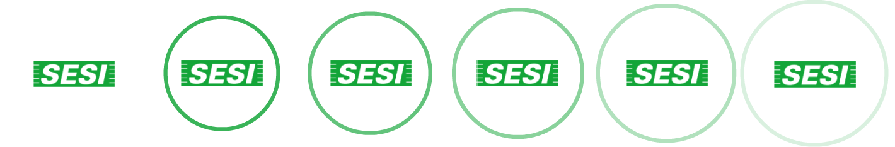
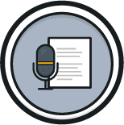
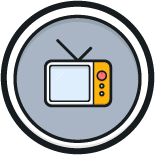